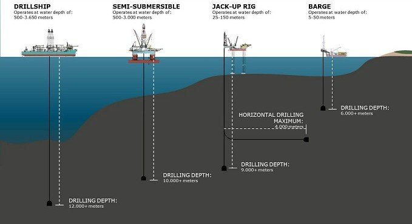

My Notes
Offshore Drilling 101
Offshore oil and gas drilling is a known adventure for all the petroleum engineers. As much as thrilling these operations are at the ocean surface, so is the complexity of these operations. Offshore drilling operations are typically conducted in various water depths, ranging from shallow waters close to the shoreline to ultra-deepwater regions far offshore. Drilling ops can vary significantly depending on factors such as geological conditions, reservoir depth, technology available. This article briefly explains some of the important aspects of offshore drilling.
 Rig Types
Offshore Platforms:
Offshore platforms serve as the cornerstone of offshore drilling operations, providing a stable platform for drilling rigs and production facilities. These platforms are classified based on water depth and structural design:
- Fixed Platforms: Typically used in water depths ranging from 50 to 1,500 feet, fixed platforms are securely anchored to the seabed using piles or gravity-based structures.
- Semi-submersible Platforms: Capable of operating in water depths exceeding 10,000 feet, semi-submersible platforms utilize buoyancy to remain afloat while being tethered to the seabed with mooring lines.
- Drillships: Mobile drilling vessels equipped with dynamic positioning systems, drillships can operate in ultra-deepwater depths exceeding 12,000 feet.
Types of Offshore Platforms, a general classification
Geology and Oil Properties:
Offshore basins host a diverse range of geological formations, including sandstone, limestone, and shale reservoirs. These formations exhibit varying permeability and porosity characteristics, influencing fluid flow rates and reservoir productivity. Properties of oil and gas, such as viscosity and API gravity, play a crucial role in reservoir characterization and production optimization:
Ranges from as low as 0.5 cP for light crude oil to over 10,000 cP for heavy bitumen, impacting fluid flow rates and well productivity.
Typically ranges from 10 to 70 API, with higher API gravity indicating lighter, more valuable crude oil.
Offshore Drilling Equipments:
Any offshore drilling operation has the following components:
- Subsea BOP Stack: Similar to the BOP stack used in surface drilling operations, the subsea BOP stack is installed on the wellhead on the seabed to provide critical well control functions. It consists of annular and ram preventers, control systems, hydraulic accumulators, and connectors, designed to prevent blowouts and manage wellbore pressure.
- Subsea Christmas Tree: The subsea Christmas tree is an assembly of valves, chokes, and sensors installed on the wellhead to control the flow of hydrocarbons from the reservoir to the surface. It serves as the interface between the wellbore and production flowlines, allowing for the regulation of fluid production and injection.
- Subsea Control System: The subsea control system comprises hydraulic, electrical, and communication components used to remotely operate and monitor subsea equipment. It includes umbilicals, hydraulic lines, control modules, and umbilical termination assemblies (UTAs), enabling real-time control and communication between surface facilities and subsea assets.
- Subsea Wellhead and Casing: The subsea wellhead is a specialized component installed on the seabed to support the casing strings and provide a secure foundation for the BOP stack and Christmas tree. It includes casing hangers, casing heads, and casing connectors designed to withstand high-pressure and high-temperature environments.
- Subsea Riser System: The subsea riser system connects the drilling rig or production platform to the subsea wellhead and BOP stack, providing a conduit for drilling mud, casing, and production fluids. It includes riser joints, tensioners, and connectors designed to withstand dynamic forces and maintain wellbore integrity.
- Subsea Intervention Equipment: Subsea intervention equipment, such as remotely operated vehicles (ROVs) and intervention tooling, is used for maintenance, inspection, and repair activities on subsea wells and equipment. ROVs are equipped with cameras, manipulator arms, and sensors to perform tasks at depths beyond human capabilities.
- Annular Preventer: The annular preventer is the uppermost component of the BOP stack and consists of a flexible rubber or elastomeric element encased in a metal housing. It forms a seal around the drill pipe or casing, enabling pressure control and well shut-in operations. The annular preventer can be hydraulically activated to close around the drill string or open to allow passage during normal drilling operations.
- Ram Preventers: Ram preventers are robust hydraulic devices designed to seal off the wellbore by closing around the drill pipe or casing. They come in various configurations to accommodate different wellbore sizes and conditions:
- Hydraulic Accumulator: Hydraulic accumulators store pressurized hydraulic fluid used to actuate the BOP stack components in the event of a loss of primary power or control. They provide backup energy to ensure reliable operation of the BOP stack under all conditions.
- Manifold and Connectors: The BOP stack is connected to the drilling riser and surface equipment through a series of hydraulic and control fluid lines, as well as electrical and communication cables. Manifolds and connectors facilitate the transfer of fluids, signals, and power between the BOP stack and surface facilities.
- Installation of BOP Stack: Prior to drilling, the BOP stack is installed on the wellhead to provide primary well control. Running in Conductor casing: As shown in the figure, a conductor casing attached allong the drill bit is drilled into sea bed to a very shallow depth in order to provide a isolation from sea water. The conductor casing provides a duct and isolates the drillbit and drill pipe and the mud circulation from the sea water and directly acts as a channel to pass drill fluids upto the mudpumps at the surface.
- Once conductor casing is drilled and cemented, the surface casing is drilled and cemented, followed by the general operations procedure of intermediate and production casings after.
- Mud pumps circulate drilling fluid through the drill string, lubricating the drill bit and carrying rock cuttings to the surface. Parameters such as drilling depth, mud weight, and circulation rate are closely monitored to ensure safe and efficient drilling operations. During drilling after a reaching a certain depth, when the bit reaches the reservoir formation, there is a high probality of receving gas/oil influx into the well bore. This is one of the very important factors is to be considered while drilling. Usually any oil or gas influx during drilling (kick) has a high pressure and can cause damage to wellbore, subsurface drilling equipments and can also reach surface and cause breakout at a very high pressure. It can be a life critical condition for the facility and the personell if such an event occurs. Hence a BOP is installed prior to drilling the surface casing. The BOP stack is set of valves as mentioned earlier, which can isolate the influx from reaching the surface.
- Horizontal Drilling: Involves drilling wells parallel to the reservoir formation to maximize contact and enhance production rates. Horizontal wells can extend over several thousand feet within the reservoir.
- Directional Drilling: Enables deviation from vertical well trajectories to reach specific targets within the reservoir, enhancing reservoir drainage and optimizing well placement.
- Managed Pressure Drilling (MPD): Utilizes advanced control systems to maintain precise wellbore pressure, mitigating risks associated with narrow pressure windows and minimizing formation damage.
- Real-Time Monitoring Systems: Continuous monitoring of drilling parameters and wellbore conditions enables early detection of anomalies and prompt intervention to prevent well control incidents.
- Automated Control Systems: Integrated control systems automate critical drilling processes, enhancing operational efficiency and reducing the likelihood of human error.
Typical BOP stack
Blowout Preventers (BOP) stack:
A Blowout Preventer (BOP) stack is a critical component of offshore drilling equipment designed to prevent uncontrolled releases of hydrocarbons (blowouts) during drilling operations. It serves as the primary safety barrier between the wellbore and the environment, providing mechanisms to control well pressure and contain potential hazards.
A typical BOP stack comprises several components arranged in a stack configuration, each serving specific functions:
Blind Rams: Solid blocks that provide a complete seal by closing against each other, effectively shutting off the wellbore.
Shear Rams: Specialized rams designed to cut and seal the drill pipe in case of an emergency, such as a wellhead or casing failure.
Pipe Rams: Specifically designed to seal around the drill pipe, preventing flow from the wellbore.
Control System: The control system comprises hydraulic actuators, valves, and control panels responsible for operating and controlling the BOP stack components. It allows for remote operation from the drilling rig or control room, enabling rapid response to well control incidents and emergency situations.
Blow Out Preventer
Drilling Operations
Offshore Drilling
Types of Drilling Techniques:
Risks and Safety Measures:
As mentioned earlier, offshore drilling operations have inherent risks, including well kicks, blowouts, and environmental hazards. To mitigate these risks, operators implement comprehensive safety protocols and employ advanced technologies, like:
Offshore production system
**Note: All image credits to respective publishers.